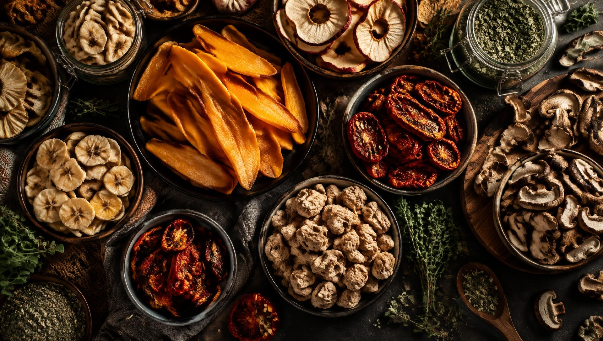
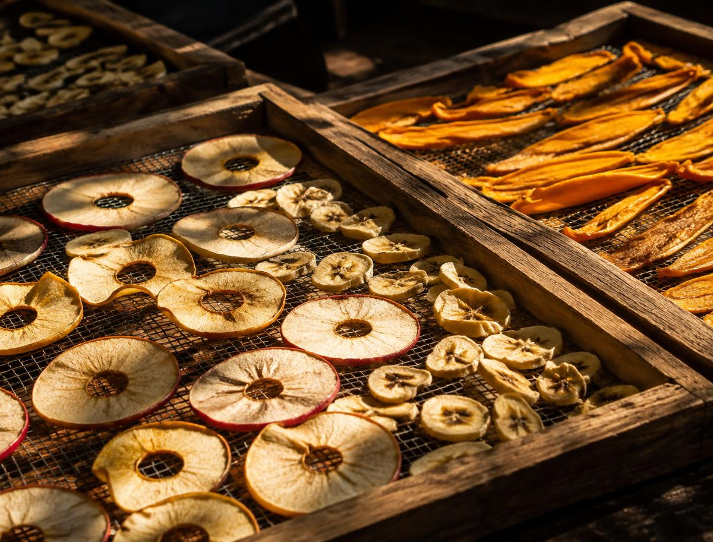
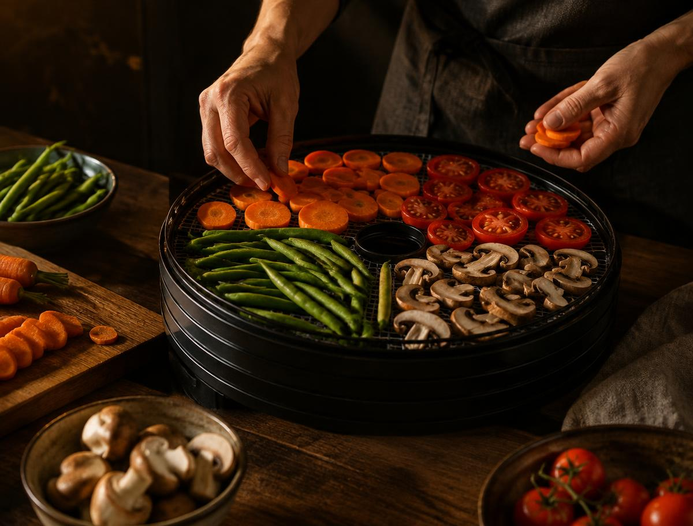
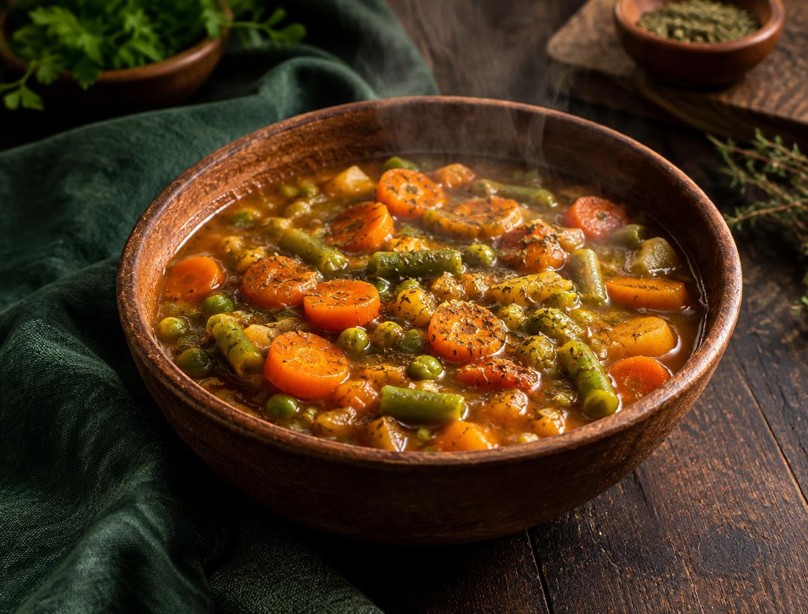

Ao sol
Fatias ficam em bandejas teladas, sob sol forte, clima seco e boa ventilação. É econômico, mas depende do tempo e exige proteção contra poeira, insetos e o sereno da noite.
Melhor para frutas em regiões quentes e secas
Retirar a água. Guardar o sabor. Uma jornada prática pela técnica que transforma colheitas em provisões leves, duráveis e deliciosas.
O princípio
Desidratar é remover grande parte da água de um alimento por evaporação ou outros processos. Com menos água disponível, bactérias, leveduras e bolores têm dificuldade para se multiplicar, e muitas reações de deterioração ficam mais lentas.
A técnica é uma das formas mais antigas de conservação. Ela reduz peso e volume, facilita o transporte, dispensa refrigeração durante o armazenamento e permite aproveitar alimentos da safra por muito mais tempo. O sabor fica concentrado — assim como açúcares e calorias por grama, por isso frutas secas pedem moderação.
Calor, ar e tempo
O objetivo é sempre o mesmo: retirar umidade sem cozinhar ou queimar o alimento. A escolha depende do clima, do ingrediente, do equipamento e do controle necessário.
Fatias ficam em bandejas teladas, sob sol forte, clima seco e boa ventilação. É econômico, mas depende do tempo e exige proteção contra poeira, insetos e o sereno da noite.
Melhor para frutas em regiões quentes e secasMaços pequenos ficam pendurados em local seco, limpo e ventilado. Sem sol direto, folhas delicadas conservam melhor a cor, o aroma e os óleos essenciais.
Ideal para salsa, alecrim, hortelã e oréganoForno baixo ou desidratador elétrico faz o ar aquecido circular continuamente. O controle de tempo e temperatura produz um resultado mais uniforme e higiênico.
Opção mais previsível para uso domésticoNa indústria, o alimento é congelado e a água passa do gelo ao vapor sob vácuo. Preserva muito bem forma, aroma e nutrientes, mas requer equipamento especializado.
Usada em cafés, frutas e refeições de expedição
Secagem solar. As fatias não devem se tocar; uma tela fina protege contra insetos e poeira.

Antes de ligar o calor
Escolha bem. Use alimentos maduros, firmes, frescos e sem mofo, podridão, perfurações ou partes machucadas.
Higienize. Lave as mãos, superfícies, utensílios e alimentos. Escorra e seque antes de cortar.
Uniformize. Retire partes impróprias e corte pedaços com a mesma espessura para que terminem juntos.
Pré-trate quando necessário. Água com limão reduz o escurecimento de frutas; o branqueamento rápido ajuda vegetais a preservar cor e sabor.
Laboratório
Prepare ao menos uma fruta, um vegetal, carne vegetal e uma erva. Registre alimento, corte, método, temperatura, horário inicial e final. Depois, leve amostras ao instrutor e explique o processo.
| Categoria | Sugestão | Preparo | Referência* | Ponto de secagem |
|---|---|---|---|---|
| Fruta | Maçã ou banana | Fatias de 4–6 mm | 55–60 °C · 6–12 h | Flexível, sem pontos úmidos |
| Vegetal | Cenoura ou tomate | Rodelas uniformes | 55–60 °C · 6–10 h | Seco e firme; tomate fica maleável |
| Carne vegetal | Proteína de soja | Hidratada, espremida e temperada | 60–65 °C · 6–10 h | Inteiramente seca, sem centro macio |
| Erva | Salsa ou alecrim | Folhas limpas e bem secas | 35–45 °C · 2–4 h | Esfarela facilmente |
* Tempos são aproximados: espessura, umidade inicial, circulação de ar e equipamento alteram o resultado. Siga também o manual do aparelho.
Mergulhe maçã, pera ou banana por 5 minutos em água com suco de limão; escorra e distribua sem sobrepor. É uma alternativa doméstica ao uso profissional de sulfitos.
Cenoura, ervilha e vagem podem passar rapidamente por vapor ou água fervente e depois por água fria. Isso inativa enzimas que prejudicam cor, textura e sabor.
Hidrate a proteína de soja em água quente, esprema muito bem, tempere e espalhe em camada fina. Não guarde enquanto houver centro macio ou condensação.
Seque à sombra ou em temperatura baixa. Guarde as folhas inteiras e esmague apenas na hora de usar: assim os óleos aromáticos duram mais.
Depois da secagem
Deixe o alimento chegar à temperatura ambiente antes de fechar. Produto morno produz condensação.
Nos primeiros dias, agite o pote e observe. Gotículas indicam umidade: volte a secar.
Use pote de vidro, embalagem hermética ou saco a vácuo. Faça porções pequenas para abrir menos vezes.
Guarde em lugar fresco, seco e escuro. Luz, oxigênio, calor e umidade reduzem qualidade e vida útil.
Rotule com alimento e data. Use primeiro o lote mais antigo e descarte qualquer sinal de mofo, inseto ou odor estranho.

Do pote para a panelaO caminho de volta
Cubra o alimento com água potável fria, morna ou quente e aguarde até amaciar. Frutas podem levar de 15 a 30 minutos; vegetais podem ficar de molho ou ir direto para sopas e molhos. A proteína de soja costuma hidratar em água ou caldo quente por 10 a 15 minutos.
Depois de reidratado, o alimento volta a ser perecível. Cozinhe ou consuma logo; não o deixe por longos períodos em temperatura ambiente.
Para ir além
A desidratação impede o crescimento, mas não elimina necessariamente todos os microrganismos. Higiene e armazenamento continuam essenciais.
Fibras, minerais, proteínas e gorduras resistem relativamente bem; vitamina C e alguns compostos aromáticos podem diminuir com calor, luz e ar.
A água sai, mas açúcares, ácidos e aromas permanecem em menor volume. É por isso que tomate seco e uva-passa parecem tão intensos.
O dióxido de enxofre pode preservar cor e controlar microrganismos em frutas. Como sulfitos causam reações em pessoas sensíveis, seu uso exige orientação, controle e rotulagem — não improvise em casa.